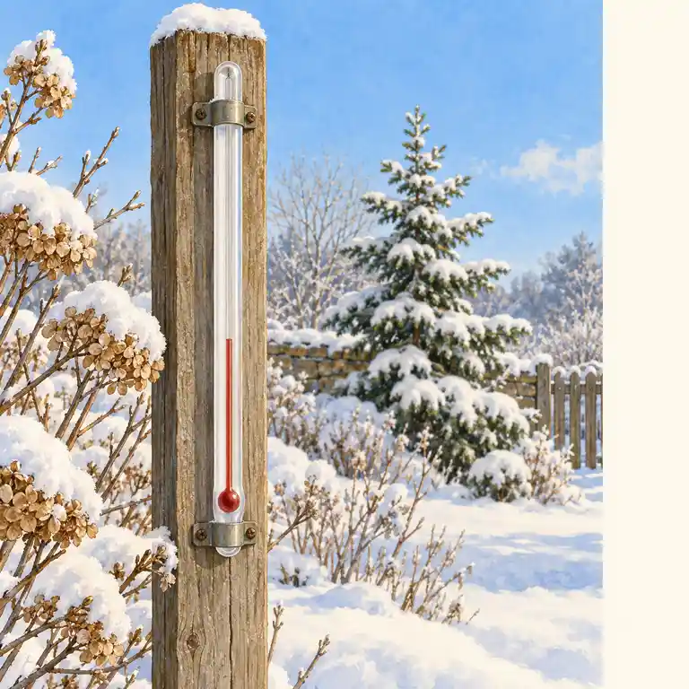
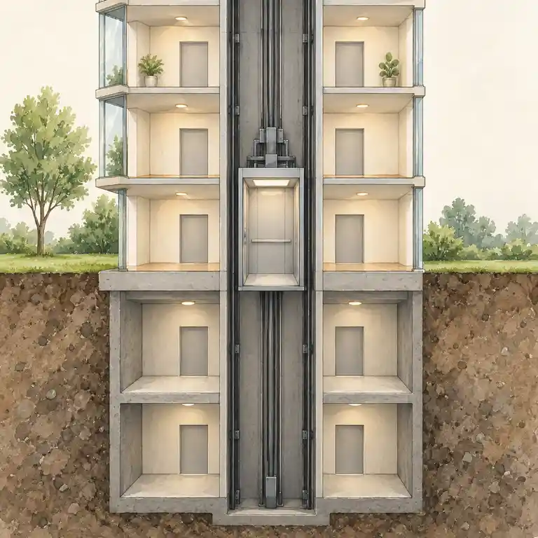

Pro 7. ročník: záporná čísla na ose, porovnávání, absolutní hodnota a počítání.


Na číselné ose leží záporná čísla vlevo od nuly – čím dál vlevo, tím menší. Absolutní hodnota |a| je vzdálenost od nuly, je vždy nezáporná. Součin dvou čísel se stejnými znaménky je kladný, s různými záporný.